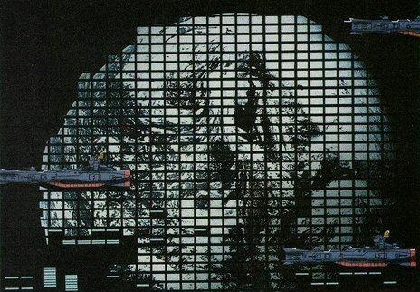
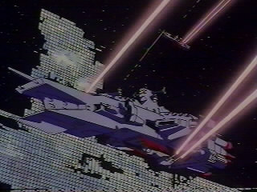
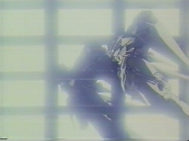

| Solar System Earth Federation Space Force Large-scale "Laser" Weapon |
|||
|  | |||
| Seeing the continual threat of another Colony Drop from the Zeon Duchy, Earth Federation higher ups needed some kind of method to deal with the possibility that, at any time, Zeon armed forces personnell could theoretically send another giant mass hurdling towards Earth. Taking the principle of the Archimedes Mirror into consideration, the monstrocity called "Solar System" was laid down. | |||
| |||
| |||
| The Solar System itself is able to generate a wide field of beams towards its target. Depending on the target in question, the mirrors can project a wide beam several dozen kilometers in diameter as a means of incinerating multiple targets, or narrow down into a very small beam with a diameter about the size of a single battleship; highly useful in creating holes in space colonies or even asteroid fortresses. | |||
| Given the sheer number of mirrors, the Solar System is capable of functioning even if great numbers of them have been blown off or otherwise incapacitated. Obviously, its power begins to deteroriate as the number of functioning mirrors decreases, but as long as at least half of them are still operational, its ability to destroy will still be maintained.
Another useful factor that the Solar System enjoys is its ability to fire through friendly units that are near its surface. Due to the fashion in which the Solar System operates, the beam is not nearly intense enough to damage units within a certain safe distance from the mirrors themselves (this is the area considered to be outside the Solar System's focus). In this capacity, warships and mobile suits acting in defense of the Solar System can defend it from enemy incursion right up to the Solar System's firing. |
 |
| |
| In addition, while it can be aligned in such a way to fire at a target over and over, due to the time to unpack, pack, align, realign and move the entire System, it can only fire on one target per day. | |||
| What the Solar System lacks in these conveniences, however, it makes up in range. Due to the nature of the blast, the array can fire effectively on targets hundreds of kilometers away, with essentially zero time delay to the target. It merely requires a more precise focus.
The final advantage is that the Solar System is completely legal under the Antarctic Treaty - It does not use objects of extreme mass, Nuclear, Biological or Chemical weapons to damage its target. However, it is still capable of causing as much damage as an entire fleets compliment of Nuclear missiles. The final disadvantage is cost. The Solar System is a truly monstrous weapon, and all that glass is in no way cheap. However, the Solar System is a completely terrifying and effective weapon, both for attack and defence. |
 | ||